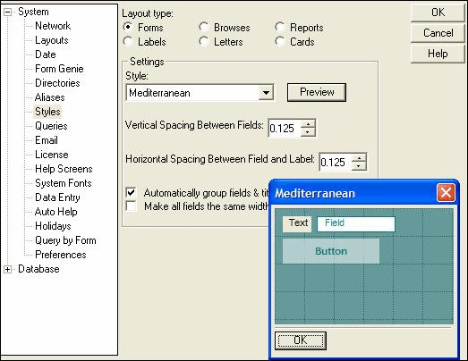

Setting Default Layout Styles
Alpha Five lets you choose a pre-defined layout style for each layout type. Pre-defined styles enable you to create attractive layouts that have a consistent appearance with less effort. All new layouts then use the selected style as a default.
To set the layout styles, choose View > Settings.
When the Settings dialog box appears, click Styles.

Setting Default Layout Styles
To set the style for a particular type of layout, click the appropriate Layout Type radio button. From the Style drop-down list box, choose the style you want to use. You can also set the default Vertical Spacing Between Fields and Horizontal Spacing Between Fields, as well as select whether to Automatically Group Fields and Titles and Make all fields the same width.
See Also